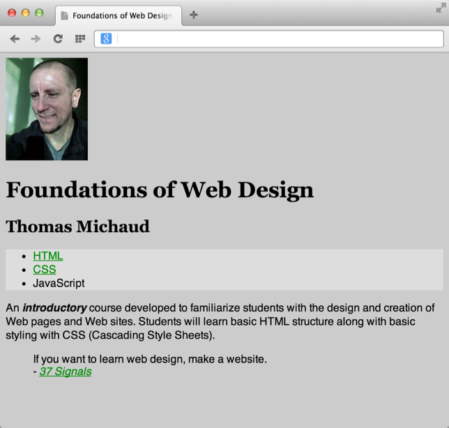
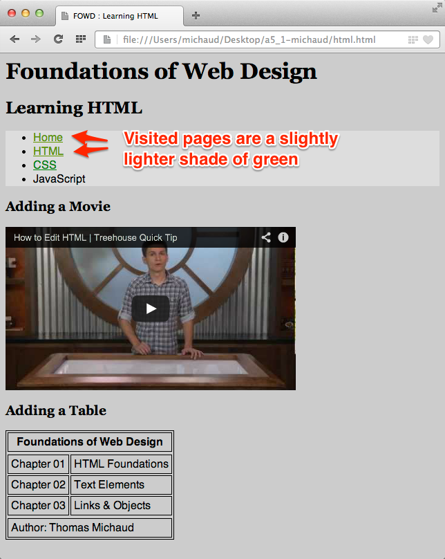
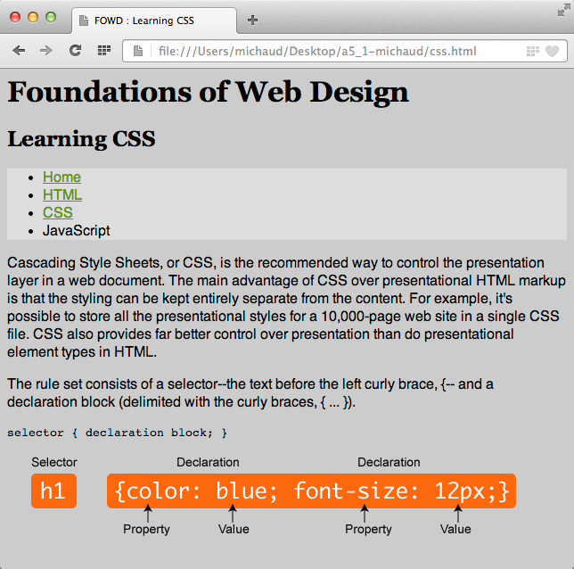

In this assignment, you'll use a single stylesheet to change colors and fonts styles across multiple HTML documents.
id attribute with the value of "nav" applied to the opening ul tag.
Stop and Check - Your folder structure should be:
In the site.css document you need to add the following rules...
body selector with the following declarations:
background-color should be a gray with the value of #ccccccfont-family should be set to Helvetica, Arial, sans-serifh1-h6) should have a font-family of Georgia, serif
p and li selectors should have a line-height of 1.25emp selector that has a child em selector should have a font-weight of boldul selector with the ID selector (#) of nav to a background-color value of #dddddda selector to: #008b14a selector with the pseudo :link to #008b14a selector with the pseudo :visited to #649a00a selector with the pseudo :hover to #00638ba selector with the pseudo :active to #008b14a selector with the pseudo :focus to #00638bstyle element and the code changing the h2 to the color orange:
<style type="text/css" media="screen">
h2 {color: orange;}
</style>
<style type="text/css" media="screen"> table, tr, th, td{border:1px solid black;} th, td{ padding: 4px;} </style>
Last thing is to check to see if we can link our external style sheet to our HTML documents.
link elementtitle element in each html document (css.html, html.html, and index.html), place a link element that finds your site.css document in the css folder.Remember to validate your HTML documents
Oh, and you know that you can VALIDATE YOUR CSS?
Just like assignment 4_1, your submission is two-fold:
View the screenshots of each document. Does yours look similar?
  